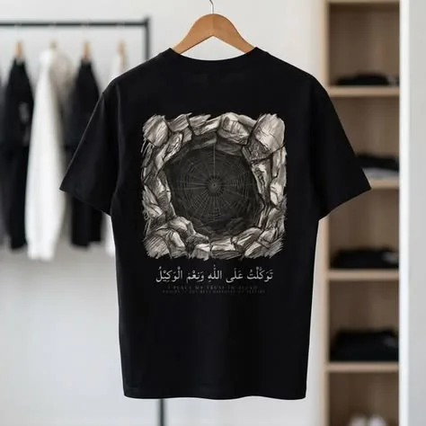
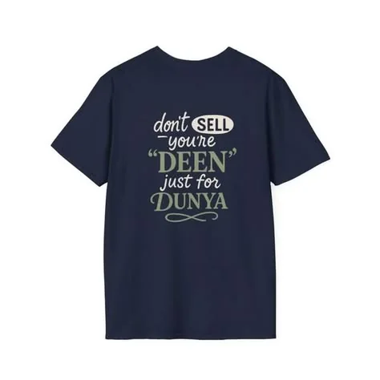
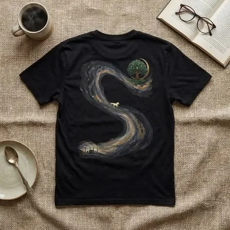

Work · Print-on-demand brand
Art with Meaning
TAQEN Collection
Islamic and faith-inspired apparel, built by a team of six.
Opens in a new tab. The store is still online, but no new products are being added.
Three of the designs

01 A web across a cave opening 
02 Hand-lettering on navy 
03 A path through a night sky
- Timeline
- Started early Ramadan 2026, launched early 2026
- Outcome
- No orders. The store is still online, but no longer developed.
- Built by
- A team of six
- Built with
- HTML, JavaScript, Supabase, Netlify, Printify
The brand
- The idea
TAQEN is a print-on-demand brand for Islamic and faith-inspired apparel, art prints and accessories. A team of six built it in their spare time, working mostly from their phones. The goal was a brand for Muslim customers who wanted modest, stylish clothing with real stories behind the designs.
- The problem
Modest, stylish clothing suited to Muslim customers was hard to find. Most available options were generic shirts with Arabic text, or art that looked mass-produced rather than crafted. TAQEN set out to fill that gap with designs rooted in Islamic history, geometry and calligraphy.
- The team
TAQEN was built by a team of six. Ruhan Tahlil designed the website and created the initial designs, and contributed substantially across the project.
The other contributors worked on marketing, editing and videography, community development, and design.
The store
- What was built
- A storefront with a home page, product catalog, cart and About page
- Shipping, returns, privacy and terms pages
- 25+ products and designs
- A Supabase database for products and orders/cart data
- Hosting on Netlify, with fulfilment through Printify and checkout through Gumroad
Stack: HTML and vanilla JavaScript, Netlify, Supabase, Printify, GitHub.
- Getting customers
The team marketed through Pinterest and Facebook.
- Outcome
TAQEN did not receive its first order. As the team's other commitments grew, the project slowed. The store remains online, but no new products are being added and the database is inactive.
What went wrong
- Technical and payment hurdles
Payment options were limited, so checkout stayed on Gumroad's off-site flow, and backend authentication issues with Supabase took time away from growth.
- Limited time and capacity
The project depended on the team's spare hours.
- Checkout trust
Sending customers to an off-site checkout likely cost trust at the most important moment.
- Traffic
Marketing posts did not lead to an order.
What the team learned
Trust and checkout friction kill conversion
Visitors who browse will not buy if payment feels unfamiliar or off-site.
A team needs commitment beyond the build
Launching is the easy part. Steady marketing and iteration are what keep a store alive.
Validate demand before building the full store
Testing designs and interest first would have shown what customers wanted before the whole site was built.
Skills gained
Product design, marketing, website logic, web design, Supabase and backend work, front-end development, and team coordination.
Links
The store is still online. The rest is where the team posted.
A personal and team project, shown on Curiohatch.
Want to see what we find on your site?
We will email you what we find within 1 to 2 business days.